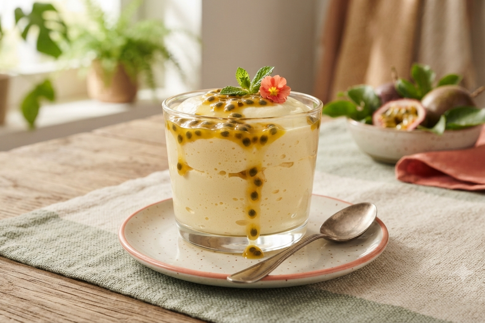

Mousse de Maracujá com Calda
Leve, cremosa e com aquele toque azedinho que todo mundo ama. Uma sobremesa que impressiona — e vale cada minuto de dedicação no preparo.
- Tempo de preparo: 30 minutos (+ 3h de geladeira)
- Rendimento: 8 porções
- Dificuldade: Difícil
Ingredientes
Mousse
Calda
Modo de Preparo
Veja também: Ver todas as Receitas